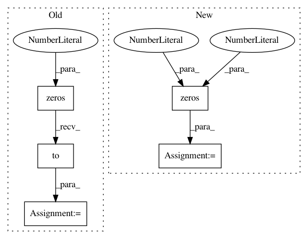

a828315185a9dc8b21ec8e5dbead9044caf0d3a2,test/geometry/test_conversions.py,TestQuaternionExpToLog,test_smoke_batch,#TestQuaternionExpToLog#Any#Any#,245
Before Change
@pytest.mark.parametrize("batch_size", (1, 3, 8))
def test_smoke_batch(self, device, batch_size):
quaternion_exp = torch.zeros(batch_size, 4).to(device)
quaternion_log = kornia.quaternion_exp_to_log(quaternion_exp)
assert quaternion_log.shape == (batch_size, 3)
def test_unit_quaternion(self, device):
After Change
@pytest.mark.skip(reason="turn off all jit for a while")
def test_jit(self, device, dtype):
@torch.jit.script
def op_script(input):
return kornia.quaternion_to_rotation_matrix(input)
quaternion = torch.tensor([0., 0., 1., 0.], device=device, dtype=dtype)
actual = op_script(quaternion)
In pattern: SUPERPATTERN
Frequency: 4
Non-data size: 5
Instances
Project Name: arraiy/torchgeometry
Commit Name: a828315185a9dc8b21ec8e5dbead9044caf0d3a2
Time: 2020-12-22
Author: sj8716643@126.com
File Name: test/geometry/test_conversions.py
Class Name: TestQuaternionExpToLog
Method Name: test_smoke_batch
Project Name: arraiy/torchgeometry
Commit Name: a828315185a9dc8b21ec8e5dbead9044caf0d3a2
Time: 2020-12-22
Author: sj8716643@126.com
File Name: test/geometry/test_conversions.py
Class Name: TestQuaternionToRotationMatrix
Method Name: test_smoke_batch
Project Name: arraiy/torchgeometry
Commit Name: a828315185a9dc8b21ec8e5dbead9044caf0d3a2
Time: 2020-12-22
Author: sj8716643@126.com
File Name: test/geometry/test_conversions.py
Class Name: TestRotationMatrixToQuaternion
Method Name: test_smoke_batch
Project Name: arraiy/torchgeometry
Commit Name: a828315185a9dc8b21ec8e5dbead9044caf0d3a2
Time: 2020-12-22
Author: sj8716643@126.com
File Name: test/geometry/test_conversions.py
Class Name: TestAngleAxisToQuaternion
Method Name: test_smoke_batch